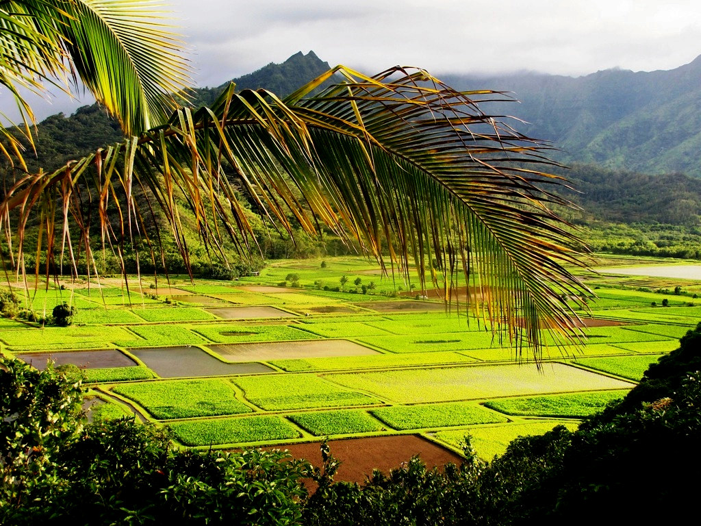
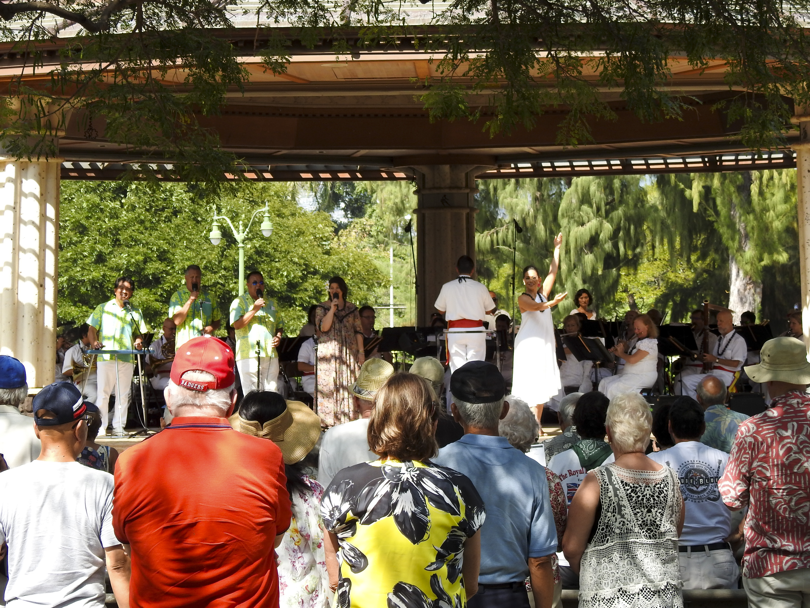

Da 'Aina
The land, or da 'aina, is an essential part of Hawaiian culture and identity. It has shaped the way of life for the Kanaka people for centuries.
From the mountains to the ocean, the land provides resources, food, and a spiritual connection to the ancestors.This page explores the history and culture of Hawaii's land, including the sacredness of certain places and the traditional practices used to maintain its health and balance.
We also touch on the current environmental issues facing Hawaii and its people, including the impact of development, pollution, and climate change.Finally, we look at the community and people who call Hawaii home. Throug the stories and experiences of Kanaka who live on and care for the land, we gain a deeper understanding of the connection between people and place in this unique and beautiful corner of the world.
History and Culture

The history and culture of Hawai'i is rich and diverse. Native Hawaiians have a unique culture and identity that is deeply rooted in the land and sea. The first Polynesians arrived in Hawai'i around 1500 years ago, and they brought with them their own unique customs, beliefs, and practices.
Over time, the Hawaiians developed their own distinct culture, with its own language, art, music, and dance. They also developed a complex system of land management and resource allocation, which helped them sustain their way of life for centuries.
However, with the arrival of European explorers and settlers in the late 18th century, Hawaiian society began to undergo significant changes. Western influence led to the introduction of new technologies, religions, and social structures, and it also had a profound impact on the Hawaiian language and culture.
Today, there is a renewed interest in Hawaiian culture and language, and efforts are being made to preserve and protect it for future generations. Visitors to Hawai'i can learn about the rich history and culture of the islands by visiting museums, historic sites, and cultural events.
Environmental Issues
As one of the most biodiverse places on Earth, Hawaii has a unique responsibility to protect its natural resources. Development and tourism can have a significant impact on the environment, and efforts have been made to find a balance between economic growth and environmental conservation.

Many organizations and individuals are working to promote sustainable practices and protect endangered species, such as the Hawaiian green sea turtle and the Hawaiian monk seal. Renewable energy sources, such as solar and wind power, are being increasingly used to reduce reliance on fossil fuels and protect the environment.
Community and People
The Hawaiian people have a strong sense of community and place great importance on relationships with one another and with the land. The concept of ‘ohana (family) extends beyond blood relatives and encompasses close friends and neighbors as well. This close-knit community often works together to tackle issues affecting their land and way of life, such as land development, water rights, and protecting natural resources.
Protecting the Land
The Hawaiian concept of mālama ‘āina (to care for the land) is a central aspect of the culture. Many native Hawaiians work tirelessly to preserve the natural beauty of the islands and to protect the environment. They believe that their connection to the land is essential to their identity and their way of life. This includes efforts to protect endangered species, to promote sustainable agriculture, and to advocate for clean energy.
Cultural Preservation
The Hawaiian culture has a rich history and tradition, and many native Hawaiians work hard to preserve their heritage. This includes efforts to revive the Hawaiian language, to practice traditional crafts and arts, and to share their cultural practices with others. Native Hawaiian cultural practitioners, or kumu, work with communities to teach traditional skills such as hula, lei making, and lauhala weaving.